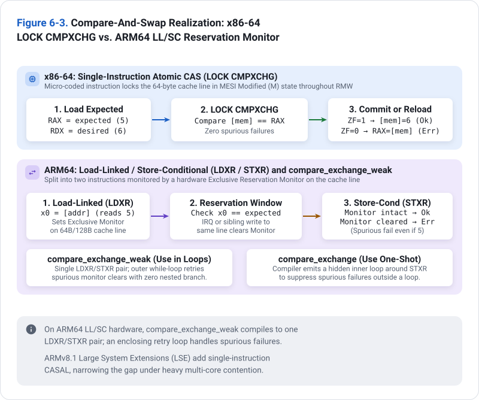
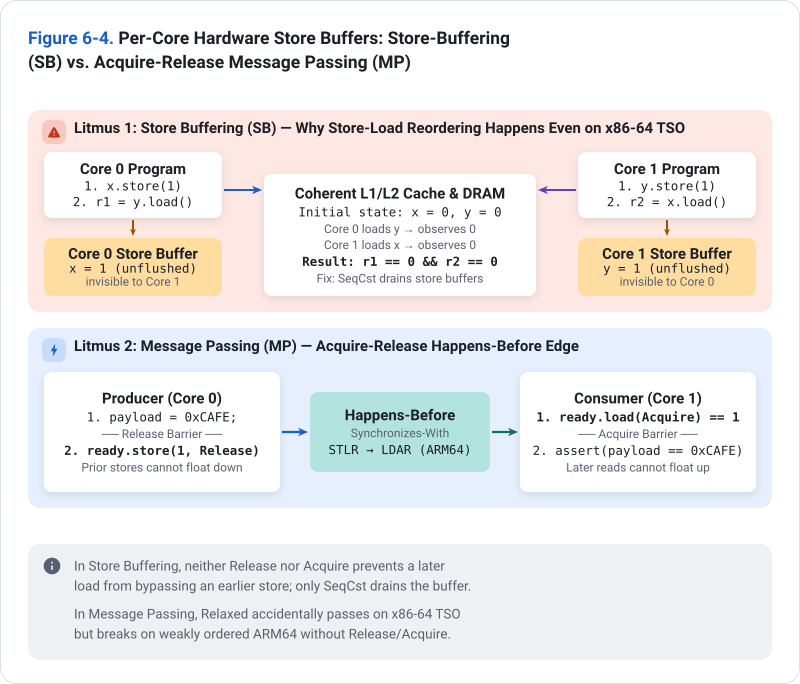
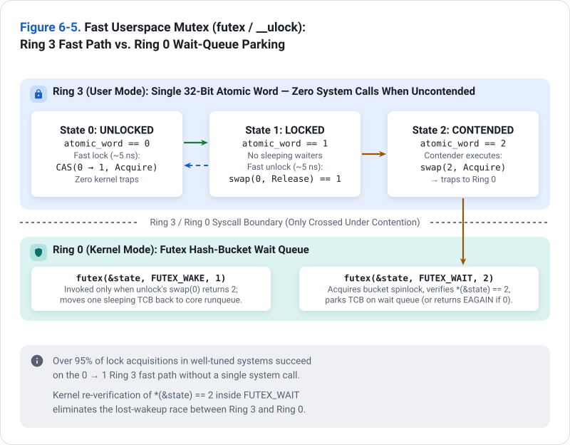
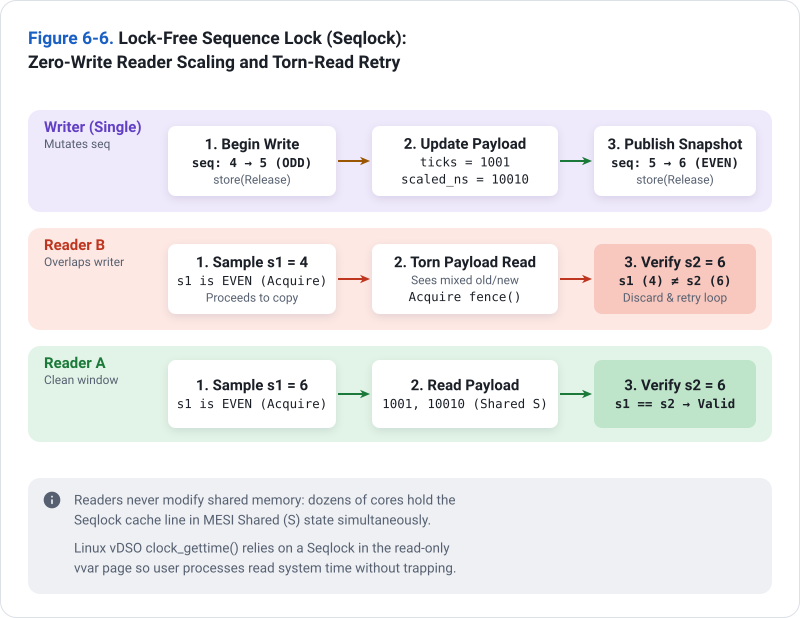

6. Synchronization and Memory Ordering
As seen in Chapters 2 and 4, a non-atomic Read-Modify-Write expression (counter++) decomposes into three discrete machine instructions (load, increment, and store), creating an atomicity gap through which concurrent threads lose updates. Single-word atomic instructions eliminate lost updates on isolated scalar variables. Systems software, however, routinely mutates composite data structures (linked lists, circular buffers, page-table hierarchies, file descriptor tables, and allocator free lists) whose structural invariants span multiple machine words and cache lines.
Preserving data integrity across concurrent threads requires enforcing two orthogonal properties:
- Mutual Exclusion and Predicate Coordination: Serializing multi-instruction critical sections and suspending threads passively when a required logical precondition is unsatisfied.
- Memory Ordering and Cross-Core Visibility: Constraining compiler instruction reordering and per-core hardware store buffers so that writes committed prior to a synchronization point become deterministically visible to peer cores observing that synchronization point.
6.1 Mutual Exclusion and Critical Sections
A mutex (mutual exclusion lock) enforces an exclusive ownership invariant: at most one thread may execute within the protected critical section at any instant. When a thread invokes lock() on a mutex currently owned by another thread, the synchronization runtime parks the contending thread in a kernel wait queue, allowing the physical core to execute other runnable threads rather than spinning idly.
The selection between atomic instructions and mutexes is governed by critical-section granularity and static safety guarantees:
- Atomic Instructions operate directly in user mode (
Ring 3/EL0, ~5–20 ns uncontended) and are appropriate for isolated counters, state flags, bitmasks, and lock-free single-producer/single-consumer ring indices. - Mutexes guard multi-object invariants of arbitrary complexity. In C++,
std::mutexis declared independently of the variables it protects, relying on developer discipline to ensure every access acquires the lock. In Rust,Mutex<T>encapsulates the protected payloadTinside the lock type itself: the type system enforces at compile time thatTis accessible solely through an activeMutexGuard<'_, T>, whoseDropimplementation releases the lock deterministically upon scope exit or stack unwinding.

Listing 6-1. The shared counter, protected by a mutex (C++20).
// ch06/mutex_counter.cpp: the counter from chapter 4, now guarded by a mutex.
#include <cstdint>
#include <iostream>
#include <mutex>
#include <thread>
#include <vector>
int main() {
constexpr int kThreads = 8;
constexpr uint64_t kIters = 5'000'000;
uint64_t counter = 0;
std::mutex m;
std::vector<std::thread> workers;
for (int i = 0; i < kThreads; ++i) {
workers.emplace_back([&] {
for (uint64_t j = 0; j < kIters; ++j) {
std::lock_guard<std::mutex> lock(m);
++counter;
}
});
}
for (auto& t : workers) t.join();
std::cout << "expected " << (kThreads * kIters)
<< ", observed " << counter << "\n";
}
Output 6-1. The observed value equals the expected value in every run.
expected 40000000, observed 40000000
Listing 6-2. The same counter in Rust.
// ch06/mutex_counter.rs: the same guarded counter in Rust.
use std::sync::{Arc, Mutex};
use std::thread;
fn main() -> Result<(), Box<dyn std::error::Error>> {
const THREADS: usize = 8;
const ITERS: u64 = 5_000_000;
let counter = Arc::new(Mutex::new(0u64));
let mut handles = Vec::new();
for _ in 0..THREADS {
let c = Arc::clone(&counter);
handles.push(thread::spawn(move || {
for _ in 0..ITERS {
if let Ok(mut guard) = c.lock() {
*guard += 1;
}
}
}));
}
for h in handles {
h.join().map_err(|_| "worker thread panicked")?;
}
let guard = counter.lock().map_err(|_| "mutex poisoned")?;
println!(
"expected {}, observed {}",
THREADS as u64 * ITERS,
*guard
);
Ok(())
}Output 6-2.
expected 40000000, observed 40000000
6.2 Condition Variables and Predicate-Based Synchronization
Mutexes enforce mutual exclusion, yet they provide no mechanism for suspending execution until a shared logical state (a predicate) becomes true (for example, awaiting non-empty occupancy or available buffer capacity in a bounded queue). Repeatedly acquiring a mutex, testing the predicate, and releasing the mutex in a polling loop wastes CPU cycles and saturates the cache coherence bus.
A condition variable resolves predicate waiting by pairing an internal wait queue with an associated mutex. Invoking wait(lock) performs two state transitions as a single atomic operation:
- Releases the held mutex
M. - Enqueues the calling thread onto the condition variable’s sleep queue.
Atomicity across these two steps eliminates the lost-wakeup hazard. If releasing M and entering the sleep queue were separate, interruptible steps, a consumer could observe an empty queue and unlock M; prior to the consumer entering the wait queue, a producer could acquire M, append an item, invoke notify_one() on an empty wait queue, and unlock M. The consumer would subsequently enter the wait queue and remain blocked indefinitely despite an unread item residing in the buffer. Atomic unlock-and-sleep ensures that no peer thread can acquire M until the caller is already enrolled on the wait queue.
Every condition-variable wait must be enclosed within a while (!predicate) loop (or Rust’s Condvar::wait_while), never a single if (!predicate) branch. Two distinct mechanisms invalidate a non-looping check:
- Spurious Wakeups: Portable Operating System Interface (
POSIX) (pthread_cond_wait) and operating system kernels permit a waiting thread to return fromwaitwithout a corresponding notification event. - Post-Wakeup State Interception: Returning from a condition wait moves the thread from the condition variable queue to the mutex acquisition queue rather than granting immediate ownership. An intervening thread may acquire the mutex first and invalidate the predicate before the awakened thread obtains lock ownership.
Listing 6-3. A bounded buffer with two producers and two consumers (C++20).
// ch06/prodcons.cpp: a bounded buffer shared by two producers and two consumers.
#include <condition_variable>
#include <cstdint>
#include <iostream>
#include <mutex>
#include <thread>
#include <vector>
int main() {
constexpr int kCapacity = 8;
constexpr int kProducers = 2;
constexpr int kConsumers = 2;
constexpr uint64_t kItemsPerProducer = 100'000;
int buf[kCapacity];
int head = 0, tail = 0, count = 0;
std::mutex m;
std::condition_variable not_full, not_empty;
std::vector<std::thread> producers, consumers;
std::vector<uint64_t> produced_sum(kProducers, 0);
std::vector<uint64_t> consumed_sum(kConsumers, 0);
for (int p = 0; p < kProducers; ++p) {
producers.emplace_back([&, p] {
uint64_t first = p * kItemsPerProducer + 1;
for (uint64_t v = first; v < first + kItemsPerProducer; ++v) {
std::unique_lock<std::mutex> lock(m);
not_full.wait(lock, [&] { return count < kCapacity; });
buf[tail] = static_cast<int>(v); // fits: v <= 200000
tail = (tail + 1) % kCapacity;
++count;
produced_sum[p] += v;
not_empty.notify_one();
}
});
}
for (int c = 0; c < kConsumers; ++c) {
consumers.emplace_back([&, c] {
uint64_t local = 0;
constexpr uint64_t kItemsPerConsumer = kProducers * kItemsPerProducer / kConsumers;
for (uint64_t done = 0; done < kItemsPerConsumer; ++done) {
std::unique_lock<std::mutex> lock(m);
not_empty.wait(lock, [&] { return count > 0; });
int v = buf[head];
head = (head + 1) % kCapacity;
--count;
local += v;
not_full.notify_one();
}
consumed_sum[c] = local;
});
}
for (auto& t : producers) t.join();
for (auto& t : consumers) t.join();
uint64_t expected =
(kProducers * kItemsPerProducer) * (kProducers * kItemsPerProducer + 1) / 2;
uint64_t produced = 0, consumed = 0;
for (uint64_t s : produced_sum) produced += s;
for (uint64_t s : consumed_sum) consumed += s;
std::cout << "produced sum " << produced << "\n"
<< "consumed sum " << consumed << "\n"
<< "expected " << expected << "\n"
<< "match " << (produced == consumed && consumed == expected
? "yes"
: "NO")
<< "\n";
}
Output 6-3. The three sums are equal.
produced sum 20000100000
consumed sum 20000100000
expected 20000100000
match yes
Listing 6-4. The same buffer in Rust, with Mutex and Condvar.
// ch06/prodcons.rs: the same bounded buffer with Mutex + Condvar.
use std::collections::VecDeque;
use std::sync::{Arc, Condvar, Mutex};
use std::thread;
const CAPACITY: usize = 8;
const PRODUCERS: usize = 2;
const CONSUMERS: usize = 2;
const ITEMS_PER_PRODUCER: u64 = 100_000;
type BufferResult<T> = Result<T, &'static str>;
const POISONED: &str = "a thread panicked while it held the buffer mutex";
const PANICKED: &str = "a worker thread panicked";
struct Buffer {
q: VecDeque<u64>,
capacity: usize,
}
impl Buffer {
fn is_full(&self) -> bool {
self.q.len() == self.capacity
}
fn is_empty(&self) -> bool {
self.q.is_empty()
}
}
fn main() -> BufferResult<()> {
let buffer = Buffer {
q: VecDeque::new(),
capacity: CAPACITY,
};
let buf = Arc::new((Mutex::new(buffer), Condvar::new()));
let mut producers = Vec::new();
let mut consumers = Vec::new();
for p in 0..PRODUCERS {
let b = Arc::clone(&buf);
producers.push(thread::spawn(move || -> BufferResult<u64> {
let (lock, cv) = &*b;
let first = p as u64 * ITEMS_PER_PRODUCER + 1;
let mut sum = 0u64;
for v in first..first + ITEMS_PER_PRODUCER {
let g = lock
.lock()
.map_err(|_| POISONED)?;
let mut g = cv
.wait_while(g, |buffer| buffer.is_full())
.map_err(|_| POISONED)?;
g.q.push_back(v);
sum += v;
cv.notify_all();
}
Ok(sum)
}));
}
for _ in 0..CONSUMERS {
let b = Arc::clone(&buf);
consumers.push(thread::spawn(move || -> BufferResult<u64> {
let (lock, cv) = &*b;
let mut sum = 0u64;
let total = PRODUCERS as u64 * ITEMS_PER_PRODUCER;
for _ in 0..total / CONSUMERS as u64 {
let g = lock
.lock()
.map_err(|_| POISONED)?;
let mut g = cv
.wait_while(g, |buffer| buffer.is_empty())
.map_err(|_| POISONED)?;
sum += g
.q
.pop_front()
.ok_or("the buffer was empty after the wait")?;
cv.notify_all();
}
Ok(sum)
}));
}
let mut produced = 0;
let mut consumed = 0;
for handle in producers {
let sum = handle
.join()
.map_err(|_| PANICKED)?;
produced += sum?;
}
for handle in consumers {
let sum = handle
.join()
.map_err(|_| PANICKED)?;
consumed += sum?;
}
let total = PRODUCERS as u64 * ITEMS_PER_PRODUCER;
let expected = total * (total + 1) / 2;
println!("produced sum {produced}");
println!("consumed sum {consumed}");
println!("expected {expected}");
let all_equal = produced == consumed && consumed == expected;
let verdict = if all_equal { "yes" } else { "NO" };
println!("match {verdict}");
Ok(())
}Output 6-4.
produced sum 20000100000
consumed sum 20000100000
expected 20000100000
match yes
6.3 Deadlock: Causes and Prevention
A deadlock occurs when a set of threads enters permanent suspension because every member of the set holds at least one exclusive resource while waiting indefinitely for a resource owned by another member of the same set. Coffman’s theorem establishes that deadlock occurs if and only if four necessary conditions hold simultaneously:
| Coffman Condition | Formal Definition | Engineering Prevention Mechanism |
|---|---|---|
| 1. Mutual Exclusion | At least one resource is held in non-shareable exclusive mode | Substitute lock-free atomics, immutable snapshots, or Seqlocks where applicable |
| 2. Hold and Wait | A thread retains ownership of one lock while blocking to acquire another | Acquire lock sets atomically (std::scoped_lock(a, b)) or release held locks upon try_lock failure |
| 3. No Preemption | The kernel cannot forcibly revoke a held mutex from its owning thread | Implement cooperative backoff protocols using non-blocking try_lock() |
| 4. Circular Wait | A directed cycle exists in the resource wait-for graph (T1 → B, T2 → A) | Enforce a strict global acquisition hierarchy (for example, ascending lock address order &a < &b) |
Negating any single Coffman condition provably precludes deadlock. Production kernels (such as Linux’s lockdep lock-order validator) rely primarily on enforcing a strict global lock acquisition hierarchy to eliminate circular wait statically and dynamically.

Listing 6-5. A deliberate deadlock caused by inverted lock acquisition order (C++20).
// ch06/deadlock.cpp: two workers, two mutexes, opposite acquisition order.
// This program is expected to hang; the harness kills it and records the outcome.
#include <chrono>
#include <iostream>
#include <mutex>
#include <thread>
int main() {
std::mutex a, b;
std::thread t1([&] {
std::lock_guard<std::mutex> la(a);
std::cout << "worker 1 holds A\n" << std::flush;
std::this_thread::sleep_for(std::chrono::milliseconds(50));
std::lock_guard<std::mutex> lb(b); // waits for B, held by worker 2
std::cout << "worker 1 got A and B\n" << std::flush;
});
std::thread t2([&] {
std::lock_guard<std::mutex> lb(b);
std::cout << "worker 2 holds B\n" << std::flush;
std::this_thread::sleep_for(std::chrono::milliseconds(50));
std::lock_guard<std::mutex> la(a); // waits for A, held by worker 1
std::cout << "worker 2 got B and A\n" << std::flush;
});
t1.join();
t2.join();
std::cout << "finished without deadlock\n";
}
Output 6-5. Each worker acquires its first mutex and blocks indefinitely on the second.
worker 1 holds A
worker 2 holds B
harness: process still alive after 1 s - deadlocked (killed)
Listing 6-6. The same deliberate deadlock in Rust.
// ch06/deadlock.rs: two workers, two mutexes, opposite acquisition order.
// This program is expected to hang; the harness terminates it and records the outcome.
use std::io::{self, Write};
use std::sync::{Arc, Mutex};
use std::thread;
use std::time::Duration;
fn main() {
let a = Arc::new(Mutex::new(()));
let b = Arc::new(Mutex::new(()));
let t1 = {
let a = Arc::clone(&a);
let b = Arc::clone(&b);
thread::spawn(move || {
let _la = a.lock().expect("mutex A poisoned");
println!("worker 1 holds A");
let _ = io::stdout().flush();
thread::sleep(Duration::from_millis(50));
let _lb = b.lock().expect("mutex B poisoned"); // waits for B, held by worker 2
println!("worker 1 got A and B");
let _ = io::stdout().flush();
})
};
let t2 = {
let a = Arc::clone(&a);
let b = Arc::clone(&b);
thread::spawn(move || {
let _lb = b.lock().expect("mutex B poisoned");
println!("worker 2 holds B");
let _ = io::stdout().flush();
thread::sleep(Duration::from_millis(50));
let _la = a.lock().expect("mutex A poisoned"); // waits for A, held by worker 1
println!("worker 2 got B and A");
let _ = io::stdout().flush();
})
};
let _ = t1.join();
let _ = t2.join();
println!("finished without deadlock");
}Output 6-6.
worker 1 holds A
worker 2 holds B
harness: process still alive after 1 s - deadlocked (killed)
Where a global lock hierarchy cannot be established statically, breaking Hold and Wait via non-blocking try_lock() eliminates the deadlock cycle. When Worker 2 holds Mutex B and a.try_lock() fails, Worker 2 immediately releases Mutex B, pauses briefly to mitigate livelock, and retries acquisition.
Listing 6-7. Deadlock elimination using try_lock backoff (C++20).
// ch06/trylock.cpp: the same two workers, but worker 2 backs off instead of blocking.
#include <chrono>
#include <iostream>
#include <mutex>
#include <thread>
int main() {
std::mutex a, b;
std::thread t1([&] {
std::lock_guard<std::mutex> la(a);
std::cout << "worker 1 holds A\n" << std::flush;
std::this_thread::sleep_for(std::chrono::milliseconds(50));
std::lock_guard<std::mutex> lb(b);
std::cout << "worker 1 got A and B\n" << std::flush;
});
std::thread t2([&] {
for (;;) {
{
std::lock_guard<std::mutex> lb(b);
std::cout << "worker 2 holds B, tries A\n" << std::flush;
if (a.try_lock()) {
std::cout << "worker 2 got B and A\n" << std::flush;
a.unlock();
break;
}
}
std::this_thread::sleep_for(std::chrono::milliseconds(5));
}
});
t1.join();
t2.join();
std::cout << "finished without deadlock\n";
}
Output 6-7. Worker 2 backs off until Worker 1 completes, and both threads finish.
worker 2 holds B, tries A
worker 1 holds A
worker 2 holds B, tries A
worker 2 holds B, tries A
worker 2 holds B, tries A
worker 2 holds B, tries A
worker 2 holds B, tries A
worker 2 holds B, tries A
worker 2 holds B, tries A
worker 2 holds B, tries A
worker 2 holds B, tries A
worker 1 got A and B
worker 2 holds B, tries A
worker 2 got B and A
finished without deadlock
Listing 6-8. The same try_lock backoff protocol in Rust.
// ch06/trylock.rs: the same two workers, but worker 2 backs off instead of blocking.
use std::io::{self, Write};
use std::sync::{Arc, Mutex};
use std::thread;
use std::time::Duration;
fn main() {
let a = Arc::new(Mutex::new(()));
let b = Arc::new(Mutex::new(()));
let t1 = {
let a = Arc::clone(&a);
let b = Arc::clone(&b);
thread::spawn(move || {
let _la = a.lock().expect("mutex A poisoned");
println!("worker 1 holds A");
let _ = io::stdout().flush();
thread::sleep(Duration::from_millis(50));
let _lb = b.lock().expect("mutex B poisoned");
println!("worker 1 got A and B");
let _ = io::stdout().flush();
})
};
let t2 = {
let a = Arc::clone(&a);
let b = Arc::clone(&b);
thread::spawn(move || {
loop {
{
let _lb = b.lock().expect("mutex B poisoned");
println!("worker 2 holds B, tries A");
let _ = io::stdout().flush();
if let Ok(_la) = a.try_lock() {
println!("worker 2 got B and A");
let _ = io::stdout().flush();
break;
}
}
thread::sleep(Duration::from_millis(5));
}
})
};
t1.join().expect("worker 1 panicked");
t2.join().expect("worker 2 panicked");
println!("finished without deadlock");
}Output 6-8.
worker 1 holds A
worker 2 holds B, tries A
worker 2 holds B, tries A
worker 2 holds B, tries A
worker 2 holds B, tries A
worker 2 holds B, tries A
worker 2 holds B, tries A
worker 2 holds B, tries A
worker 2 holds B, tries A
worker 2 holds B, tries A
worker 2 holds B, tries A
worker 1 got A and B
worker 2 holds B, tries A
worker 2 got B and A
finished without deadlock
6.4 Atomic Compare-And-Swap (compare_exchange vs. compare_exchange_weak)
Lock-free data structures, spinlocks, atomic reference counters (std::shared_ptr and Rust’s Arc), and uncontended mutex fast paths are built upon a single universal read-modify-write primitive: Compare-And-Swap (CAS). Both C++20 and Rust expose two variants on atomic types: strong (compare_exchange_strong / compare_exchange) and weak (compare_exchange_weak).
6.4.1 Semantics of the Atomic Read-Modify-Write
Consider maintaining a shared atomic maximum (max_val) updated concurrently by multiple threads without a mutex. Evaluating if (candidate > max_val) max_val = candidate; is unsound: a peer thread may raise max_val to a higher value between the load and the store, causing the first thread to overwrite a strictly larger maximum with a stale candidate.
Compare-And-Swap closes this race by executing the equality check and conditional write as a single indivisible hardware transaction:
// Indivisible hardware semantics of CAS(addr, expected, desired):
atomic {
current = *addr;
if (current == expected) {
*addr = desired;
return Success(current);
} else {
expected = current; // reload current memory state for caller retry
return Failure(current);
}
}
Because failure automatically returns the current value stored at addr, arbitrary lock-free state transitions (such as computing a maximum, claiming a slot index, or updating a linked-list head pointer) are structured as a deterministic read-compute-CAS retry loop:
- Load the current atomic word into a thread-local variable
prev. - Compute the proposed
desiredvalue solely in local registers. - Execute
compare_exchange_weak(prev, desired, success_order, failure_order). - On success, the update committed atomically; on failure, another core mutated the word concurrently, so the loop reloads
prevand recomputesdesiredagainst the updated state.
6.4.2 Hardware Realization: x86-64 LOCK CMPXCHG vs. ARM64 LL/SC
The coexistence of strong (compare_exchange) and weak (compare_exchange_weak) primitives reflects a fundamental microarchitectural divergence between x86-64 CISC cores and ARM64 / RISC-V cores:
// x86-64 Single-Instruction CAS // ARM64 Load-Linked / Store-Conditional (LL/SC)
mov rax, r_expected 1: ldxr x0, [x_addr] // Load & set Exclusive Monitor
lock cmpxchg QWORD PTR [r_addr], r_desired cmp x0, x_expected // Verify equality
// ZF=1 on commit; ZF=0 loads [r_addr]->rax b.ne 2f // Mismatch: exit without store
stxr w1, x_desired, [x_addr] // Store if Monitor intact
cbnz w1, 1b // Internal retry loop (STRONG only)
2:
- x86-64 (
LOCK CMPXCHG): The processor executes the comparison and conditional store within a single micro-coded instruction while holding the target 64-byte cache line exclusively in the MESI Modified (M) state. Whenever*addr == expected, the store commits deterministically; spurious failures do not occur. - ARM64 / RISC-V (Load-Linked / Store-Conditional,
LDXR/STXR): RISC architectures split the atomic update into two distinct instructions coordinated by a hardware Exclusive Reservation Monitor associated with the target cache line (64 bytes on standard ARM64 cores; 128 bytes on Apple Silicon M-series cores):LDXR(Load-Exclusive Register) reads the target word and marks the cache line as exclusively reserved by the local core.STXR(Store-Exclusive Register) commitsdesiredonly if the local core’s exclusive reservation remained undisturbed sinceLDXR, returning a status flag (0for commit,1for abort).
- Spurious Failure Mechanics on LL/SC Hardware: Between
LDXRandSTXR, any hardware event that invalidates the cache-line reservation clears the Exclusive Monitor, including an asynchronous timer interrupt, a thread preemption, or a sibling core writing to an unrelated variable occupying the same 64-byte or 128-byte cache line (false sharing). Consequently,STXRmay abort and report failure even though*addrremains equal toexpected.

This hardware divergence establishes an unambiguous engineering guideline:
- Use
compare_exchange_weakinside retry loops: Because the enclosing loop already handles retry upon failure, emitting a singleLDXR/STXRpair avoids the redundant nested retry branch generated by strong CAS. (ARMv8.1 Large System Extensions,LSE, add a single-instructionCASALopcode that reduces contention overhead, yetcompare_exchange_weakremains portable and optimal across all targets). - Use
compare_exchange(strong) for single-attempt calls outside a loop: In routines such astry_lock()or uncontended mutex fast paths, a spurious LL/SC abort would produce a false negative and unnecessarily divert execution onto a slow kernel path.
Both CAS primitives accept two ordering arguments: (success_order, failure_order). Because a failed CAS neither modifies shared memory nor acquires resource ownership, specifying Relaxed for failure_order avoids unnecessary memory-barrier overhead on rejected iterations.
6.5 Hardware Memory Ordering, Store Buffers, and Litmus Tests
Atomicity guarantees that a single memory word is never observed in a torn, partially written state. Atomicity alone, however, provides no guarantee regarding the relative order in which reads and writes to distinct memory addresses become observable across separate CPU cores.
6.5.1 Microarchitectural Origins of Memory Reordering
Observable reordering of memory operations originates at two distinct layers of the execution stack:
- Compiler Optimization: Optimizing compilers (
clang -O2,rustc -O) assume single-threaded sequential semantics for non-atomic objects. Unless constrained by explicit atomic memory orderings, the compiler may reorder independent loads and stores, eliminate redundant memory reads, or cache values in registers across loop iterations. - Per-Core Hardware Store Buffers and Weakly Ordered Pipelines: Even when machine code emits store and load instructions in strict source order, modern out-of-order processors decouple core execution from cache-coherence latency through private microarchitectural queues:
- Per-Core FIFO Store Buffer: When Core 0 executes a store (
x = 1), stalling the pipeline for 40–100 cycles while awaiting MESI invalidation acknowledgments from sibling cores severely degrades instruction throughput. Core 0 instead enqueues(addr: x, val: 1)in its private Store Buffer and proceeds immediately to subsequent instructions. Core 0’s own loads snoop its Store Buffer via store forwarding, preserving single-threaded program semantics; sibling cores, however, cannot observex = 1until the buffer drains to the coherent L1 cache. - x86-64 TSO vs. ARM64 Weak Ordering: x86-64 enforces Total Store Order (TSO), preserving
Store-Store,Load-Load, andLoad-Storeorder in silicon while permittingStore-Loadreordering via the Store Buffer. Weakly ordered architectures such as ARM64 (Apple Silicon, AWS Graviton) permit all four instruction reorderings (Load-Load,Load-Store,Store-Store, andStore-Load) unless constrained by explicit ordering opcodes (LDAR,STLR,DMB ISH).
- Per-Core FIFO Store Buffer: When Core 0 executes a store (
6.5.2 Hardware Litmus Tests: Store Buffering vs. Message Passing
Concurrent memory models are verified using minimal two-thread specifications termed litmus tests. Two canonical litmus tests define the exact operational boundaries separating Relaxed, Release/Acquire, and SeqCst.
Litmus Test 1: Store Buffering (SB): Store-Load Reordering Under TSO
Assume coherent memory initially holds x = 0 and y = 0. Core 0 and Core 1 execute concurrently:
// Core 0 // Core 1
1. x.store(1, ordering); 1. y.store(1, ordering);
2. r1 = y.load(ordering); 2. r2 = x.load(ordering);
Under sequential interleaving, one store must commit first, guaranteeing that at least one core observes 1. On physical hardware executing with Relaxed or Release/Acquire, however, both cores may finish with r1 == 0 && r2 == 0:
- Core 0 buffers
x = 1in its private Store Buffer and immediately executesload(y), reading0from the coherent cache before Core 1’s buffer drains. - Simultaneously, Core 1 buffers
y = 1in its private Store Buffer and immediately executesload(x), reading0from the coherent cache before Core 0’s buffer drains. - Neither
ReleasenorAcquireprohibits this outcome: aReleasestore prevents prior operations from floating below it, and anAcquireload prevents subsequent operations from floating above it; neither forbids a subsequent load (y.load) from executing ahead of a prior store (x.store). - Resolution (
SeqCst): SpecifyingSeqCstinstructs the processor to drain its Store Buffer (XCHG/MFENCEon x86-64;STLRpaired withLDARon ARM64) before issuing the subsequent load, establishing a single global total order across all cores in whichr1 == 0 && r2 == 0is strictly precluded.
Litmus Test 2: Message Passing (MP): Acquire-Release Synchronization
Assume coherent memory initially holds payload = 0 and ready = false. Core 0 initializes a data payload and publishes a readiness flag; Core 1 waits for the flag and inspects the payload:
// Producer (Core 0) // Consumer (Core 1)
1. payload = 0xCAFE; 1. while (!ready.load(Acquire)) {}
2. ready.store(true, Release); 2. assert(payload == 0xCAFE);
- Architecture-Dependent Failure Under
Relaxed: ReplacingReleaseandAcquirewithRelaxedconstitutes a data race in both C++20 and Rust. Because x86-64 TSO hardware preservesStore-StoreandLoad-Loadorder implicitly, a defectiveRelaxedimplementation frequently passes empirical testing on x86-64 hosts. On weakly ordered ARM64 processors, however, hardware may reorder the two stores on Core 0 or the two loads on Core 1, causing Core 1 to observeready == truewhile reading stalepayload == 0. - Formal Happens-Before Guarantee (
Release/Acquire):Releaseonready.store(true)guarantees that all memory writes sequenced prior to the store (payload = 0xCAFE) become globally visible beforeready = trueenters the coherence domain (compiled toSTLRon ARM64).Acquireonready.load()guarantees that no memory read sequenced after the load (read(payload)) executes prior to observingready(compiled toLDARon ARM64).- When Core 1’s
Acquireload observes thetruevalue written by Core 0’sReleasestore, the two operations establish a synchronizes-with edge, inducing a transitive happens-before relationship that guarantees Core 1 observespayload == 0xCAFEacross all architectures.

6.5.3 Complete Reference Table of C++20 and Rust 2024 Memory Orderings
| Ordering | Formal Visibility Contract | x86-64 Machine Code | ARM64 Machine Code | Canonical Engineering Usage |
|---|---|---|---|---|
Relaxed | Single-word atomicity only; zero cross-address ordering | MOV / LOCK XADD | LDR / STR | Telemetry counters, unique ID allocation (fetch_add), failed CAS branch |
Release (stores) | Prior reads/writes cannot float below this store | Plain MOV (TSO) | STLR | mutex.unlock(), publishing a payload flag, committing SPSC ring tail |
Acquire (loads) | Subsequent reads/writes cannot float above this load | Plain MOV (TSO) | LDAR | mutex.lock(), polling a readiness flag, inspecting SPSC ring head |
AcqRel (RMW) | Both Acquire (on read) and Release (on write) | Implicit in LOCK | LDAXR/STLXR or CASAL | Atomic reference-count decrements (Arc::drop), MPMC queue slot claims |
SeqCst | Global total order across all SeqCst ops; drains Store Buffers | XCHG / MFENCE | STLR + LDAR / DMB ISH | Multi-variable Dekker mutual exclusion, Store-Buffering litmus invariants |

6.6 Synchronization Beneath the Primitives: Futexes and Seqlocks
Production operating systems combine user-mode atomic CAS instructions with kernel wait queues to achieve sub-10-nanosecond uncontended locking while avoiding CPU waste under contention.
6.6.1 Fast Userspace Mutexes (futex on Linux / __ulock on Darwin)
Executing a kernel system call upon every lock() and unlock() invocation would impose a 300–1,000 ns privilege-transition penalty on every critical section, whereas pure user-mode spinlocks waste processor cycles whenever contention persists beyond a few nanoseconds.
Contemporary mutex implementations (std::mutex, pthread_mutex_t, and Rust’s std::sync::Mutex) resolve this trade-off through a hybrid Ring 3 / Ring 0 architecture built upon Linux’s futex (Fast Userspace Mutex) or Darwin/macOS’s __ulock_wait / __ulock_wake. The lock state is encoded in a single 32-bit atomic word possessing three discrete states:
- State
0(Unlocked): No thread holds the mutex. - State
1(Locked, Uncontended): One thread owns the mutex; zero threads are parked in the kernel wait queue. - State
2(Locked, Contended): One thread owns the mutex, and one or more contending threads are parked (or entering the wait path) in Ring 0.
The protocol bifurcates into two execution paths:
- Uncontended Fast Path (Ring 3 Only, ~5 ns, Zero System Calls):
lock()executes a single strongcompare_exchange(0, 1, Acquire, Relaxed). When the mutex is unlocked (0), ownership transfers immediately in user mode without crossing the kernel boundary.unlock()executesswap(0, Release). When the previous state is1(confirming no waiting threads exist),unlock()returns directly in Ring 3 with zero system calls.
- Contended Slow Path (Ring 0 Parking and Lost-Wakeup Prevention):
- When Thread B invokes
lock()against a held mutex (state1or2), its fast-path CAS fails. - Thread B atomically swaps the lock word to
2viaswap(2, Acquire), recording the presence of a contender. Ifswap(2)returns0, Thread A released the mutex concurrently and Thread B immediately acquires ownership. - Otherwise, Thread B issues the system call
futex(&state, FUTEX_WAIT, 2). - Within Ring 0, the kernel hashes the address
&stateto a wait-queue hash bucket, acquires the bucket spinlock, and atomically re-verifies*(&state) == 2prior to removing Thread B from the CPU runqueue. If Thread A invokedunlock()and stored0during the interval between Thread B’s user-mode check and its kernel entry, the kernel detects*(&state) != 2, aborts the sleep immediately withEAGAIN, and returns Thread B to Ring 3 to re-attempt acquisition, eliminating the lost-wakeup race. - When Thread A invokes
unlock()and itsswap(0, Release)returns2, Thread A invokesfutex(&state, FUTEX_WAKE, 1), transitioning one parked TCB from the hash-bucket wait queue back onto a runnable core runqueue.
- When Thread B invokes

6.6.2 Sequence Locks (Seqlock) for Read-Mostly Kernel Data
Certain kernel data structures, such as the monotonic clock calibration parameters exported to user processes via the Linux vDSO / vvar page (Chapter 9), experience millions of concurrent reads per second across dozens of cores but infrequent single-writer updates. Standard reader-writer locks (RwLock) degrade severely under this access profile because every reader must execute an atomic increment and decrement on a shared reader_count word, forcing the MESI coherence protocol to bounce the cache line into Exclusive/Modified state across every reading core.
A Sequence Lock (Seqlock) eliminates all reader-side writes to shared memory by pairing the protected payload fields with an atomic 64-bit sequence counter (seq) initialized to 0 (even):
- Writer Protocol (Single Writer):
- Increments
seqfrom an even value2kto the odd value2k + 1withReleaseordering, indicating an active mutation window. - Stores the updated payload fields (
ticks,scaled_ns). - Increments
seqto the next even value2k + 2withReleaseordering, publishing the consistent snapshot.
- Increments
- Reader Protocol (Zero Shared Memory Writes):
- Loads
s1 = seq.load(Acquire). Ifs1is odd ((s1 & 1) != 0), a writer is actively mutating the structure; the reader retries immediately. - Copies the payload fields into thread-local registers using atomic
Relaxedloads (satisfying C++20 and Rust data-race freedom rules even if a writer overlaps the read). - Executes an
Acquirememory fence (std::atomic_thread_fence(memory_order_acquire)/fence(Ordering::Acquire)) so that payload loads cannot be reordered past the closing sequence verification, then loadss2 = seq.load(Relaxed). - Snapshot Verification: If
s1 == s2, no write commenced or completed during the read interval, proving that the local copy represents an untorn, consistent snapshot. Ifs1 != s2, a write overlapped the read; the reader discards the local copy and repeats the loop.
- Loads
Because readers issue exclusively read transactions, all processor cores simultaneously retain the Seqlock cache line in the MESI Shared (S) state, achieving linear multi-core read throughput with zero coherence invalidation traffic while writers never block behind active readers.

Listing 6-9. compare_exchange_weak CAS loop, Acquire-Release message passing, and a lock-free Seqlock (C++20).
// ch06/cas_ordering.cpp: compare_exchange_weak CAS loop, Acquire-Release
// message passing, and a lock-free Seqlock snapshot reader/writer.
#include <atomic>
#include <cstdint>
#include <iostream>
#include <thread>
#include <vector>
// 1. Atomic Compare-And-Swap (CAS) maximum accumulator using compare_exchange_weak.
static void update_max(std::atomic<uint64_t>& max_val, uint64_t candidate) {
uint64_t prev = max_val.load(std::memory_order_relaxed);
while (candidate > prev &&
!max_val.compare_exchange_weak(prev, candidate,
std::memory_order_release,
std::memory_order_relaxed)) {
// On failure (or spurious LL/SC clear on ARM64), prev is reloaded
// with the current value of max_val automatically.
}
}
// 2. Lock-free Seqlock for read-mostly telemetry coordinates.
struct TelemetrySnapshot {
uint64_t ticks;
uint64_t scaled_ns;
};
class Seqlock {
public:
void write(TelemetrySnapshot next) {
uint64_t s = seq_.load(std::memory_order_relaxed);
seq_.store(s + 1, std::memory_order_release); // odd: write in progress
std::atomic_signal_fence(std::memory_order_acq_rel);
slot_ticks_.store(next.ticks, std::memory_order_relaxed);
slot_ns_.store(next.scaled_ns, std::memory_order_relaxed);
seq_.store(s + 2, std::memory_order_release); // even: coherent snapshot
}
TelemetrySnapshot read() const {
for (;;) {
uint64_t s1 = seq_.load(std::memory_order_acquire);
if ((s1 & 1u) != 0) continue; // writer active; retry
uint64_t t = slot_ticks_.load(std::memory_order_relaxed);
uint64_t ns = slot_ns_.load(std::memory_order_relaxed);
std::atomic_thread_fence(std::memory_order_acquire);
uint64_t s2 = seq_.load(std::memory_order_relaxed);
if (s1 == s2) return {t, ns};
}
}
private:
std::atomic<uint64_t> seq_{0};
std::atomic<uint64_t> slot_ticks_{0};
std::atomic<uint64_t> slot_ns_{0};
};
int main() {
// Part A: CAS loop across 4 threads.
std::atomic<uint64_t> peak{0};
std::vector<std::thread> workers;
for (uint64_t id = 1; id <= 4; ++id) {
workers.emplace_back([&peak, id] {
for (uint64_t step = 1; step <= 25'000; ++step) {
update_max(peak, id * step);
}
});
}
for (auto& w : workers) w.join();
// Part B: Acquire-Release message passing.
uint64_t payload = 0;
std::atomic<bool> ready{false};
uint64_t observed_payload = 0;
std::thread producer([&] {
payload = 0xCAFE'BABE'2026ULL;
ready.store(true, std::memory_order_release);
});
std::thread consumer([&] {
while (!ready.load(std::memory_order_acquire)) {}
observed_payload = payload;
});
producer.join();
consumer.join();
// Part C: Seqlock invariant verification (scaled_ns == ticks * 10).
Seqlock clock_lock;
std::atomic<bool> done{false};
uint64_t torn_reads = 0;
std::thread writer([&] {
for (uint64_t i = 1; i <= 50'000; ++i) {
clock_lock.write({i, i * 10});
}
done.store(true, std::memory_order_release);
});
std::thread reader([&] {
while (!done.load(std::memory_order_acquire)) {
TelemetrySnapshot snap = clock_lock.read();
if (snap.scaled_ns != snap.ticks * 10) ++torn_reads;
}
});
writer.join();
reader.join();
std::cout << "cas peak value : " << peak.load() << "\n"
<< "acq-rel payload : 0x" << std::hex << observed_payload << std::dec << "\n"
<< "seqlock torn : " << torn_reads << "\n";
}
Output 6-9. Peak CAS convergence, verified Acquire-Release visibility, and zero torn Seqlock reads.
cas peak value : 100000
acq-rel payload : 0xcafebabe2026
seqlock torn : 0
Listing 6-10. The same CAS loop, Acquire-Release handoff, and Seqlock in Rust.
// ch06/cas_ordering.rs: compare_exchange_weak CAS loop, Acquire-Release
// message passing, and a lock-free Seqlock snapshot reader/writer.
use std::sync::atomic::{AtomicBool, AtomicU64, Ordering, compiler_fence, fence};
use std::thread;
fn update_max(max_val: &AtomicU64, candidate: u64) {
let mut prev = max_val.load(Ordering::Relaxed);
while candidate > prev {
match max_val.compare_exchange_weak(
prev,
candidate,
Ordering::Release,
Ordering::Relaxed,
) {
Ok(_) => break,
Err(actual) => prev = actual,
}
}
}
struct Seqlock {
seq: AtomicU64,
slot_ticks: AtomicU64,
slot_ns: AtomicU64,
}
impl Seqlock {
const fn new() -> Self {
Self {
seq: AtomicU64::new(0),
slot_ticks: AtomicU64::new(0),
slot_ns: AtomicU64::new(0),
}
}
fn write(&self, ticks: u64, scaled_ns: u64) {
let s = self.seq.load(Ordering::Relaxed);
self.seq.store(s + 1, Ordering::Release);
compiler_fence(Ordering::AcqRel);
self.slot_ticks.store(ticks, Ordering::Relaxed);
self.slot_ns.store(scaled_ns, Ordering::Relaxed);
self.seq.store(s + 2, Ordering::Release);
}
fn read(&self) -> (u64, u64) {
loop {
let s1 = self.seq.load(Ordering::Acquire);
if (s1 & 1) != 0 {
continue;
}
let t = self.slot_ticks.load(Ordering::Relaxed);
let ns = self.slot_ns.load(Ordering::Relaxed);
fence(Ordering::Acquire);
let s2 = self.seq.load(Ordering::Relaxed);
if s1 == s2 {
return (t, ns);
}
}
}
}
fn main() {
let peak = AtomicU64::new(0);
thread::scope(|s| {
for id in 1..=4_u64 {
let peak_ref = &peak;
s.spawn(move || {
for step in 1..=25_000_u64 {
update_max(peak_ref, id * step);
}
});
}
});
let payload = AtomicU64::new(0);
let ready = AtomicBool::new(false);
let mut observed_payload = 0_u64;
thread::scope(|s| {
s.spawn(|| {
payload.store(0xCAFE_BABE_2026, Ordering::Relaxed);
ready.store(true, Ordering::Release);
});
s.spawn(|| {
while !ready.load(Ordering::Acquire) {}
observed_payload = payload.load(Ordering::Relaxed);
});
});
let clock_lock = Seqlock::new();
let done = AtomicBool::new(false);
let mut torn_reads = 0_u64;
thread::scope(|s| {
s.spawn(|| {
for i in 1..=50_000_u64 {
clock_lock.write(i, i * 10);
}
done.store(true, Ordering::Release);
});
s.spawn(|| {
while !done.load(Ordering::Acquire) {
let (ticks, scaled_ns) = clock_lock.read();
if scaled_ns != ticks * 10 {
torn_reads += 1;
}
}
});
});
println!("cas peak value : {}", peak.load(Ordering::Relaxed));
println!("acq-rel payload : 0x{observed_payload:x}");
println!("seqlock torn : {torn_reads}");
}Output 6-10.
cas peak value : 100000
acq-rel payload : 0xcafebabe2026
seqlock torn : 0
Production synchronization integrates three architectural layers: compare_exchange_weak drives lock-free retry loops and uncontended Ring 3 fast paths (~5 ns), Release/Acquire barriers enforce cross-core visibility across private Store Buffers without SeqCst pipeline drains, and futex / __ulock parks contended threads in Ring 0 only when exclusive ownership fails.
In Listing 6-9 (code/ch06/cas_ordering.cpp), weaken the producer’s memory_order_release store and consumer’s memory_order_acquire load to memory_order_relaxed on an ARM64 machine (Apple Silicon or AWS Graviton) and run 10 million iterations to observe weakly ordered hardware reordering payload stores past the ready flag.